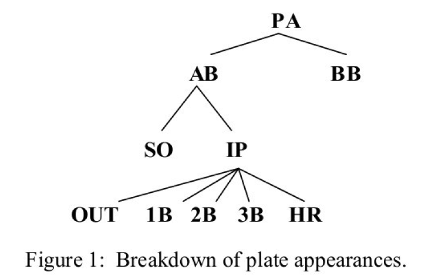
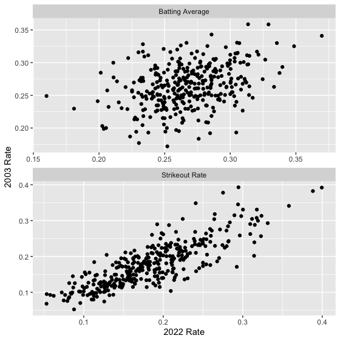
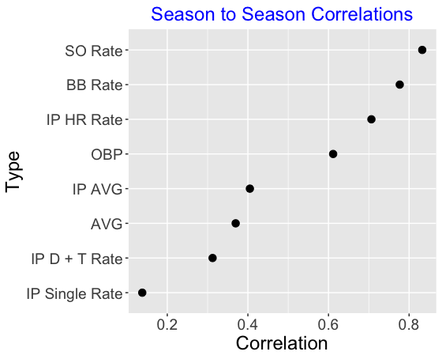
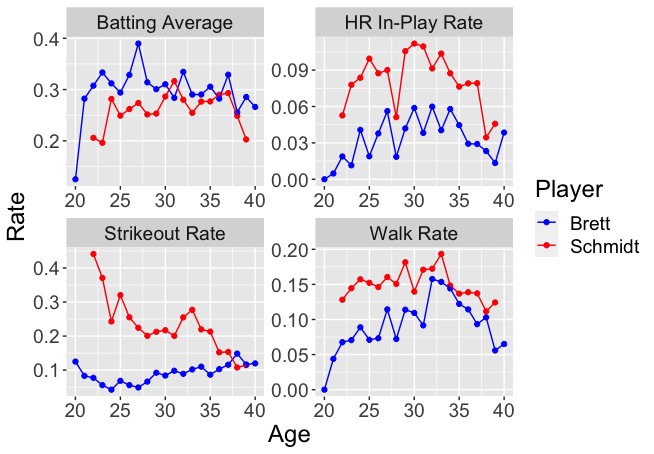
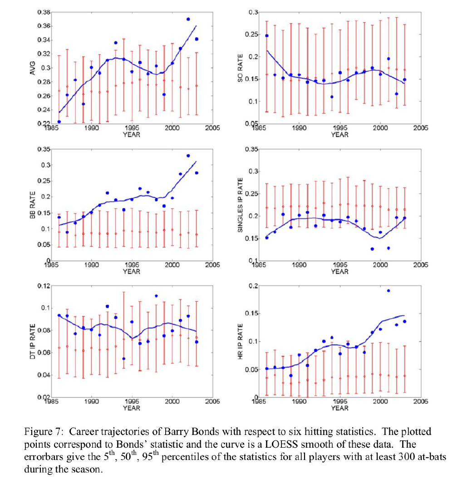
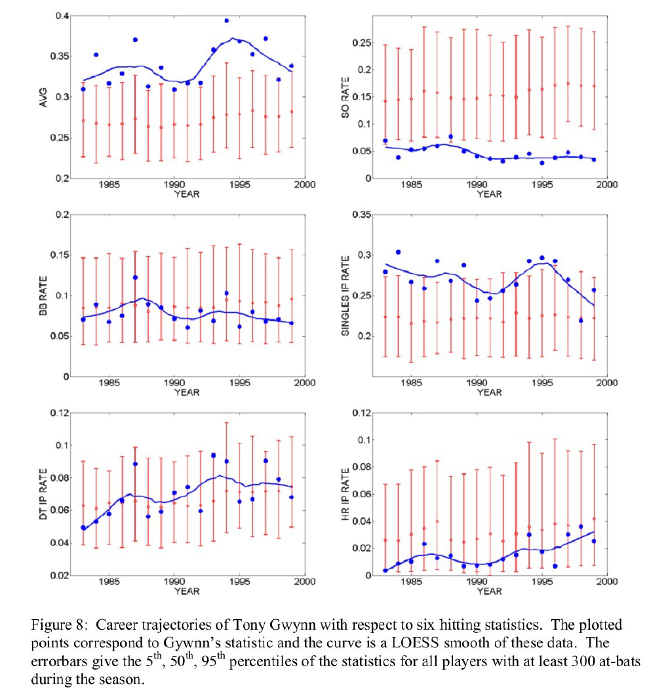

| Statistic | K | eta |
|---|---|---|
| SO Rate | 45 | 0.184 |
| IP HR Rate | 69 | 0.038 |
| BB Rate | 81 | 0.086 |
| OBP | 205 | 0.330 |
| IP AVG | 410 | 0.326 |
| AVG | 475 | 0.268 |
| IP 2+3 Rate | 474 | 0.073 |
A Batting Average: Does It Represent Ability or Luck?
ABSTRACT
Recently Bickel and Stotz (2003) explored differences in players’ batting average (AVG) over pitch count, and noted that many people misinterpreted the drop in batting average when there was two strikes. Stotz (2004) decomposes AVG as a product of two terms, the rate of not striking out, and an “in-play” batting average, and illustrates the patterns of these two measures over baseball history. Here we compare AVG with other batting statistics expressible as rates and show that AVG is a relatively poor measure of a player’s hitting ability. This analysis suggests that we should focus more on ability measures such as strikeout rate, walk rate, and home run rate when we evaluate hitters. We use these measures to compare the hitting of Mike Schmidt and George Brett and to better understand the great hitting of Barry Bonds and Tony Gwynn.
1 Introduction
The batting average is the standard measure that has been used to compare batters ever since the early years of professional baseball. It is well-known that a batting average is a relatively poor measure of the performance of a hitter. There are two obvious criticisms of a batting average. First, by considering only the official at-bats, the AVG ignores walks, and second, the AVG implicitly assumes that every base hit has the same value. Albert and Bennett (2003), Chapters 6-8 consider a number of alternative measures of hitting performance that are much better than batting average in predicting the number of team runs scored.
Despite the criticism of AVG as a batting measure, players are still compared with respect to this measure. When one clicks on the “Stats” link on the official MLB website (www.mlb.com), one sees (at the top of the page) a listing of the five highest batting averages during the 2003 season, and Albert Pujols, with the highest batting average, is considered by many fans to be the best hitter this season.
That raises an interesting question: how useful is the batting average in measuring the hitting ability of a player?
One general theme of Albert and Bennett (2003) is the predominate role of luck, or chance variation, in the game of baseball. Chance manifests itself in team competition and in the performance of players. In a particular season, each team has an inherent ability or talent to win ballgames. But since the 30 teams are relatively homogenous with respect to talent and short playoff series are used to determine the winners in the post-season, it is very likely that the team with the most talent (the truly “best” team) is not the winner of the World Series. In other words, chance variation plays a big role in the results of baseball competition. Also, chance variation makes it difficult to assess players’ ability on the basis of performance in a single season. In the evaluation of two players with respect to on-base percentage, it is possible that one player has the better ability than another player to get on-base, but by chance variability, the second player obtains the higher on-base percentage for one particular season. In the 2003 American League, Manny Ramirez had a .427 OBP followed closely by Carlos Delgado by a .426 OBP. Although Ramirez had the higher OBP season performance, most people would agree that the one-point difference is insufficient evidence to say that Ramirez was truly better than Delgado in 2003 in getting on-base.
Here we investigate what a batting average tells us about a batter’s hitting ability. Are there alternative “basic” measures of a batter’s performance (based on the raw counts of walks, singles, etc.) that are more indicative of a batter’s ability?
Here we focus on the basic outcomes when a player comes up to bat. A batter has a plate appearance (PA). Ignoring some rare events such as sacrifices and hit-by-pitches, there are two results of this PA – either he gets a walk (BB) or he has an official at-bat (AB). When he has an AB, then the batter can either strikeout (SO) or put the ball in play (IP). When a ball is in-play, then there can be an OUT based on a fielder’s play or there can be one of the four base hits – single (1B), double (2B), triple (3B), or home run (HR). The different outcomes of a plate appearance are shown graphically in Figure 1.

2 Batting Average by Count
In Chapter 4 of Albert and Bennett (2003), we looked at the significance of situational hitting statistics. We explored differences in players’ batting average due to location (home versus away), handedness of the pitcher, time (before and after the All- Star break), game situation (runners in scoring position versus no runners on, no outs), and pitch count. Generally, the conclusion from this analysis was that most of the “interesting” effects that we see in situational data are due to chance variation. But we did notice a substantial change in batting average due to pitch count. Generally, players hit for a much lower average when the pitch count is two strikes compared to ahead in the count. Moreover, this pitch count was regarded as an “ability effect” in Albert and Bennett (2003). This means that the difference in batting average due to pitch count seems to depend on the player. We noted that there was a big difference in players’ tendency to strike out and this would contribute to the wide variation in this pitch count effect.
Bickel and Stotz (2003) recently looked carefully at the differences in batting averages for different pitch counts. Using Stanford University baseball data for a fouryear time period, they calculated the batting average (AVG) and the slugging percentage (SLG) for different pitch counts. They showed that AVG and SLG both significantly dropped when the pitch count was two strikes. But Bickel and Stotz made the basic observation that strikeouts were only possible when there were two strikes, and they made the conjecture that there would be small differences in these statistics due to pitch count when the strikeout effect was removed. They defined the number of hits for all pitches thrown for strikes (HPS) and showed that batters actually were more likely to get a hit off a pitch thrown for a strike when there were two strikes than other counts. Bickel and Stotz also considered a player’s batting average restricted to balls that were put inplay, and showed that there were small differences in this measure due to pitch count.
3 A Decomposition of Batting Average
In a plate appearance, a batter’s first objective is to get his bat on the ball – that is, avoid striking out. Then he wants to hit the ball in a place that is not reachable by the fielders. Using this analogy, Bickel (2004) represents the batting average as
\[ AVG = \frac{H}{AB} \\ = \frac{IP}{AB}\frac{H}{IP} \\ = \left(1 - \frac{SO}{AB}\right)\frac{H}{IP} \]
where \(IP\) is the number of balls in play. We see from this equation that a batting average is dependent on two ratios:
- the rate of striking out \[\frac{SO}{AB}\]
- the rate of getting a batted ball (or a ball in-play) to fall in for a hit \[ \frac{H}{IP}\]
Bickel (2004) looked at the pattern of the strikeout rate and the in-play batting average over the history of baseball. He showed that the chance of getting a batted ball to fall in for a hit has remained pretty constant over the last 100 years of baseball. In contrast, there have been dramatic changes in the strikeout rate over this same period. Currently the strikeout rate among players is high and this places a constraint on the size of batting averages and Bickel thinks it will be unlikely for a player to hit for a .400 batting average in the near future.
4 Empirical Analysis
Based on the decomposition of batting average, there are a number of hitting statistics one can compute based on rates of the basic events. A player can be evaluated by means of his walk rate \[\frac{BB}{PA}\] the ratio of walks to plate appearances, or his strikeout rate \[\frac{SO}{AB}\] the ratio of strikeouts to at-bats. We also consider the standard measures AVG and OBP that we define as \[\frac{H + BB}{PA}\] the ratio of hits and walks to plate appearances. (This simplified definition of OBP is approximately equal to the usual definition of on-base percentage that accounts for sacrifice flies and hit-by-pitches.) In addition, we consider the in-play average, the in-play single rate, the in-play doubles + triples rate, and in-play home run rate that are found respectively by dividing the counts of hits, singles, etc. by the number of batted balls (the number of balls in play).
Each of the eight hitting statistics is a measure of a player’s ability to hit. But some statistics are better measures of ability than other statistics. Generally the variation that we see in a given statistic, say batting average, is based in part on differences between player abilities to hit, and the remaining variation is attributable to chance. One way of assessing how much “ability” is contained in a hitting statistic is by exploring two years of hitting data. If one particular statistic for one year is a good measurement of an ability of a player, then one would explain the players to have similar values of the statistic for two consecutive years. We collect the hitting statistics for all players with at least 100 at-bats for the 2002 and 2003 seasons. In Figure 2 (top), we construct a scatterplot of the AVGs for the two seasons and in Figure 2 (bottom) we construct a similar scatterplot of the strikeout rates. Note that there is relatively weak association in the 2002 and 2003 AVGs – in contrast, there is a much stronger positive association between the 2002 and 2003 strikeout rates. This indicates that strikeout rate is more closely related to a batter’s ability than his batting average.

We can summarize the relationships we see in the scatterplots by correlations – the correlations in the AVG and SO rate graphs are 0.36 and 0.83, respectively. These correlations confirm that SO rate is ability-driven relative to the batting average. We did similar analyses for the remaining six hitting statistics described above. Figure 3 graphs the correlation values from the scatterplots. These values indicate that SO rate, BB rate, and IP HR rate are good representations of the abilities of the hitters, and, in contrast, IP AVG, AG, IP doubles and triples rate, and IP singles rate are relatively weak measures of hitting ability.

5 Model-Based Analysis
The empirical analysis of Section 4 is useful in understanding what measures are indicative of players’ abilities. But this analysis doesn’t actually tell us how much of the variation in a particular statistic, say batting average, for a given season is due to ability and how much is due to chance variation. Towards this goal, we fit the following random effects model. Since all of the statistics are in the form of proportions, we can use a binomial model for the observed counts where the underlying player “true rates” follow an ability distribution. Letting \(y_i\) and \(n_i\) denote the number of “successes” and opportunities for the \(i\)th player in a given season, we assume that \(y_i\) is distributed binomial (\(n_i, p_i\)), where \(p_i\) is the probability that the given player obtains a success in a single opportunity. If we have \(N\) players, then we assume that the abilities of the players, \(p_1, ..., p_N\), come from an ability distribution \(g(p)\). It is convenient to assume that the ability distribution has the beta form
\[ g(p) \propto p ^{K\eta - 1} (1 - p)^{K(1-\eta) - 1}, \]
where \(\eta\) represents the mean or average ability of all players and \(K\) gives some indication of the spread of the abilities. Small values of \(K\) indicate that there is a wide range of abilities among ballplayers and large values of \(K\) indicate that there are small differences in abilities.
We fit the above random effects model to each of the eight hitting measures using data for all players in the 2003 season with at least 100 at-bats. The following table displays the estimated values of \(K\) and \(\eta\) for each of the model fits.
This table sorts the statistics with respect to ability – statistics at the top are more indicative of batting skill and the bottom statistics are more reflective of chance variation. There is a wide variation in the true strikeout rates for the players – 90% of the players strike out between 9 and 28 percent of the time. Similarly, players seem to have varying abilities to draw a walk or hit a home run.
In contrast, other batting measures seem to be primarily chance-driven, which means that much of the variation in the player values is due to basic binomial (coin tossing) variation. The most extreme measure of this type is the IP singles rate. Ninety percent of the true IP singles rates fall between .186 and .245 which is a rather short interval. One implication of this finding is it is relatively difficult for a batter to use his skill to aim his hits so that they fall in for singles. Likewise, we note from the table that the true IP doubles + triples rates and true batting averages have relatively narrow intervals.
6 Comparison of Players
6.1 Mike Schmidt and George Brett
The categorization of hitting statistics by the ability/luck dimension has implications in our comparison of the hitting of two players. What this means is that we should focus our hitter comparison on statistics that are more ability-driven rather than chance driven.
For example, suppose we wish to compare Mike Schmidt and George Brett, two Hall-of-Fame third basemen who played during the same era. To compare the hitting for these two players, one can compare their career trajectories, which are the plots of a hitting statistic against the age of the player. It is well-known that the career trajectory of a player will rise until a peak value (usually attained when the player is in his late 20’s or early 30’s) and then fall until retirement. So we compare the career trajectories keeping in mind the general rise and fall shape of this curve. Figure 6 plots the career trajectories of Schmidt and Brett for the statistics AVG, SO rate, BB rate, and IP HR rate.

First, if we look at the AVG graphs of Brett and Schmidt in the upper left corner, it is difficult to make an overall judgment who was the better hitter with respect to batting average. Part of the difficulty is due to the chance variability of season-to-season batting averages. Brett looks better than Schmidt in the early years, but after age 30, there is a lot of up-and-down variation in the season batting averages, making comparison difficult. Brett had an unusually high AVG (.390) at age 27, but there is a lot of fluctuation in his AVG in surrounding years, so it is difficult to assess Brett’s true batting average.
It is easier to compare the two hitters using one of the other hitting statistics, such as strikeout rate, walk rate, or IP home run rate. With respect to the strikeout rate, we see from the upper right graph of Figure 6 that Brett had a consistently low tendency to strike out, although there was some increase in this rate as he got older. Schmidt, in contrast, had a very strikeout rate in his youth and the rate decreased as he got older. (See Albert (1998) for a similar study of Schmidt’s pattern of home run hitting over time.) With respect to BB rate, we see from the lower left graph that Schmidt generally walked at a higher rate than Brett, although the rates were more similar at later ages. Also, we see that Schmidt’s IP HR rate was consistently in the .08 range over most of his career and Brett hit home runs at approximately half the rate of Schmidt. By looking at these three statistics that are more ability-driven, we get a better understanding of the particular hitting talents of these two great hitters.
6.2 Barry Bonds
Figure 7 shows career trajectories of Barry Bonds for six hitting statistics AVG, SO rate, BB rate, IP singles rate, IP doubles + triples rate, and IP home run rate. The values of the statistic for Bonds are indicated by dots and a LOESS smoothing curve is place on top showing the general pattern. In addition, each graph shows error bars – the limits of the bars correspond to the 5th, 50th, 95th percentiles of the values of the statistic for all players with at least 300 at-bats for each season. By comparing Bonds’ statistic values with the error bars, we can appreciate how Bonds excelled as a hitter. What patterns do we see in the six graphs?

Batting average (AVG). This first graph is difficult to interpret. Bonds’ batting average appears to increase until 1995, takes a dip, and then increases for the last four years. But this pattern may be spurious due to the large year-to-year variation in this statistic.
Strikeout rate (SO rate). In contrast to the first graph, Bonds’ tendency to strike out has been very consistent over his career. His rate seems pretty average, but Bonds’ value should be considered low given that he is a home run hitter.
Walk rate (BB rate). This graph reflects one remarkable aspect of Bonds’ career – his ability to draw walks. He clearly shows improvement in getting walks from his early years and his walk rates since 1991 have been unusually high. The extremely high values for the last three seasons (2001 – 2003) is likely due to the large number of intentional walks.
In play singles rate (IP Single’s rate). It is interesting to note that Bonds has always had a below-average singles rate. There could be several explanations for this low rate including his upper-cut swing and his tendency to pull the ball. In the 2001 season when he hit 73 home runs, he had a very low singles rate.
In play doubles plus triples rate (IP DT rate). The unusual pattern in this graph is simply due to the high variability in this statistic across seasons. Bonds’ doubles plus triples rate has generally been a little above average.
In play home run rate (IP HR rate). We see from the graph that Bonds’ IP home run rates have climbed steadily through the years, from about .05 in 1985 to .13 in 2003.
There is one noticeable large outlier at age 36 – this is the year that he hit 73 home runs. Note that some of the clearest patterns in Figure 7 correspond to the “ability” measures SO rate, BB rate, and HR IP rate, and it is harder to find patterns in the “chance” measures AVG and Doubles + Triples IP rate.
6.3 Tony Gwynn
Tony Gwynn was considered one of the greatest hitters of all time. Schell (1999), after making adjustments for different eras, varying talent pools, home parks, and late career declines, ranks Gwynn the best hitter of all time from the perspective of batting average. But why did Gwynn hit so well for average? We can get a better understanding of Gwynn’s hitting ability by constructing a set of career trajectory plots as displayed in Figure 8.

The career trajectory of batting average (the top left graph of Figure 8) clearly shows that Gwynn had an unusually high average over his entire career. But there is a lot of variation in his batting average across years, and the pattern shown by the smoothing curve may not be significant. This season-to-season variation of AVG is expected, since we know that AVG has a large chance or random element. In contrast, the consistently small value of Gwynn’s strikeout rate across seasons (the top right graph of Figure 8) is remarkable. Gwynn had an extraordinary ability to get his bat on the ball and his strikeout rate stayed in the 4 to 5 percent rate over his entire career.
The patterns of the remaining four graphs are consistent with the basic theme of this paper. Gwynn’s tendency to walk, as measured by the walk rate, was consistently a little below-average, and his home run rate stayed about 1 percent (although he displayed some additional home run power towards the end of his career). We see much year-toyear fluctuation in Gwynn’s in-play singles rate and his in-play doubles plus triples rate. It is clear that the variation in the season AVGs is controlled, in large part, by the variation in the in-play singles rates and doubles plus triples rates. Gwynn’s in-play singles rate was consistently at the upper tail of the distribution for regular players, suggesting that Gwynn had a skill to hit a ball in a location for a single. This skill to single was probably related to his skill in not striking out.
7 Concluding Remarks
It is well-known by sabermetricians (the people who do research on baseball statistics) that batting average is a poor measure of hitting performance. AVG ignores walks and the different values of hits, and so there are much superior measures of hitting performance such as Runs Created, OPS (on-base percentage plus slugging percentage), and the Linear Weights measure. But our criticism of AVG is more subtle. The batting average is difficult to interpret since it confounds two hitting characteristics, the propensity of striking out and the ability to make a batted ball fall in for a hit. For this reason, it is difficult to understand what it means for a player to possess a batting average of .320. What does this say about this player’s hitting ability? We have shown here that AVG is a relatively poor measure of a batter’s ability, and there are superior measures of ability such as strikeout rate, walk rate, and in-play home run rate. Moreover, in Section 5, we have measured the size of “ability” of different statistics by estimating the random effects distribution of abilities. The variation of the ability distribution of AVG, in-play singles rate, and in-play doubles plus triples rates is relatively narrow, while the ability distribution of strikeout rate, walk rate, and in-play home run rate are wide.
Although our methodology of measuring “ability” may be new, the main points are likely known by sabermetricians. For example, Runquist (2001) explains that strikeouts and walks are more reliable than hits – hits are more subject to random variation. There has been much current interest if a pitcher really has an ability to control the location of balls that are placed in play. McCracken (2001) claimed that the variation in turning balls-in-play into outs mainly reflected chance rather than pitchers’ abilities. Rankin (2001) investigated career totals for a number of outstanding pitchers and showed that, as these pitchers matured, their in-play batting averages tended to decrease.
Probably the most interesting aspect of this study is that it motivates new ways of evaluating hitters. Instead of looking at summary measures of batting performance, it seems useful to look at particular qualities of hitting, such as striking out, drawing a walk, or hitting a home run, that are more ability-driven than other measures. We demonstrated the usefulness of this perspective in Section 6 in comparing the career hitting of Mike Schmidt and George Brett and in studying the hitting of Barry Bonds and Tony Gwynne. For future study, it would be useful to look at a large number of great hitters, today and in the past, with respect to these qualities.
8 References
Albert, J. (1998), “The Home Run Hitting of Mike Schmidt,” Chance, 11, 27-34.
Albert, J. and Bennett (2003), Curve Ball, Copernicus Press, revised edition.
Bickel, E. (2004), “Why It’s So Hard to Hit .400”. Baseball Research Journal, 32, 15- 21.
Bickel, E. and Stotz, D. (2003), “Batting Average by Count and Pitch Type,” Baseball Research Journal, 31, 29-34.
McCracken, V. (2001), “Pitching and Defense,” Baseball Prospectus (www.baseballprospectus.com).
Rankin, D. (2001), “Trends in Career Pitcher Ball-in-Play Average,” By the Numbers (Newsletter of the SABR Statistical Analysis Committee), Vol. 11, Number 2, 5-6.
Runquist, W. (2001), “The Reliability of Pitcher Ball-in-Play Average,” By the Numbers (Newsletter of the SABR Statistical Analysis Committee), Vol. 11, Number 4, 1-2.
Schell, M. (1999), Baseball’s All-Time Best Hitters, Princeton University Press.